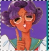

» Information ::: Twins-----------------------------------------------------------

Case #1: Anthy Himemiya
From: Shoujo Kakumei UtenaWell...what can I say? Anthy scares me sometimes. XD I found the above picture of her and I was immediately feeling deja vu, like I've seen that exact posture somewhere before. Moments later I remembered Xelloss. XD The color purple is strongly associated with both Anthy and Xelloss, and although Anthy's mostly gentle and weak, she can also be a bit evil and surprising in her actions. <.<
Know of any other character who resembles Xelloss?
Let me know!<<
return